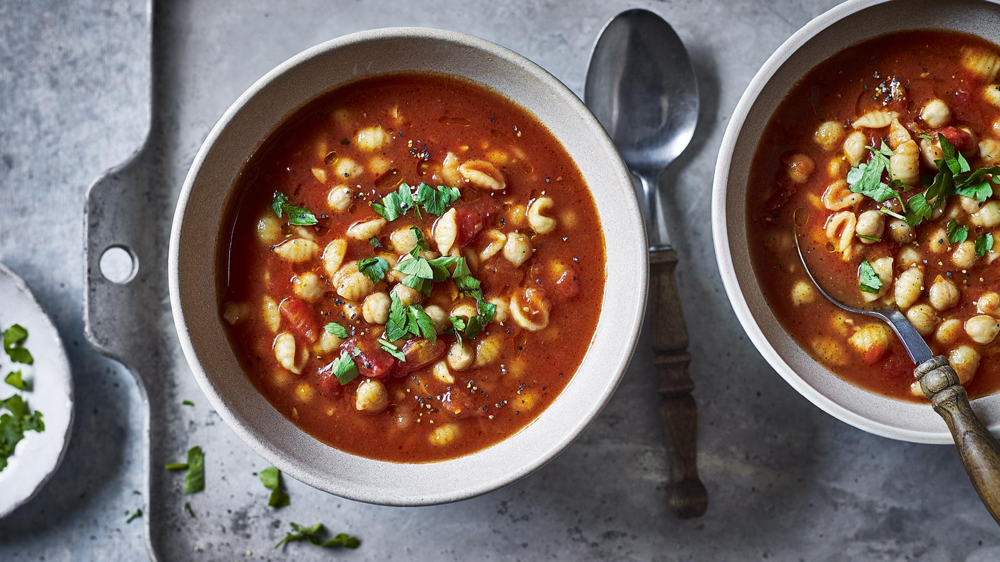

Tomato, Chickpea and Pasta Soup

This cheap, quick and easy soup is based on an Italian classic: Pasta e ceci. If you’ve got any fresh herbs to hand, sprinkle a small handful over each bowl of soup before serving. Flatleaf parsley, basil and sage would all work well.
Each serving provides 391 kcal, 14g protein, 44g carbohydrate (of which 8g sugars), 15g fat (of which 2g saturates), 10g fibre and 0.1g salt.
Ingredients
- 1 tbsp extra virgin olive oil, plus extra for drizzling
- 2 large garlic cloves, thinly sliced
- 400g tin chickpeas
- 400g tin chopped tomatoes
- 400ml/14fl oz vegetable stock
- 50g/1¾oz small pasta shapes
- freshly ground sea salt and black pepper
Method
- Heat the olive oil and garlic gently in a medium saucepan over a medium heat until the garlic is soft and just starting to brown. Drain the chickpeas and stir in along with a generous amount of salt and pepper.
- Stir in the chopped tomatoes, chicken stock and pasta shapes. Bring to the boil, then reduce the heat until the soup is just simmering.
- Cook the soup for 15 minutes, or until the pasta is tender.
- Check the seasoning, and serve finished with a generous drizzle of olive oil.
Recipe credit: Rachel Phipps, BBC Good Food
Return to Soups Page